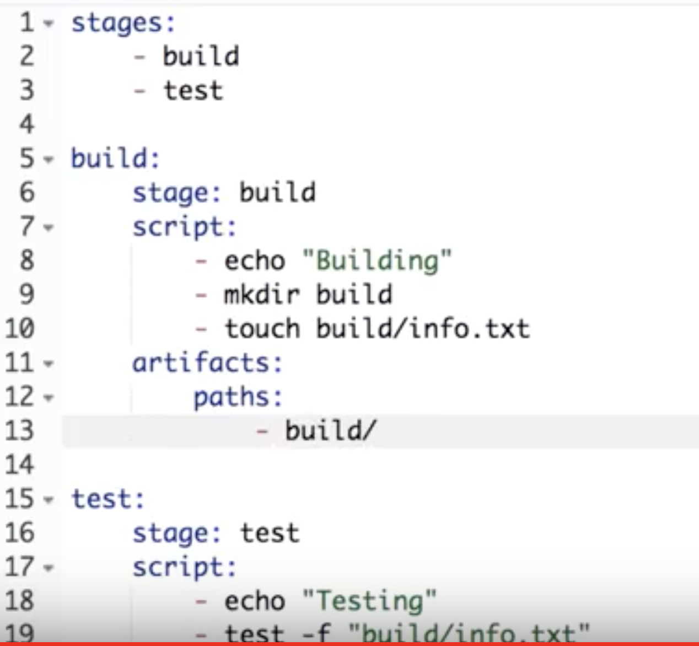
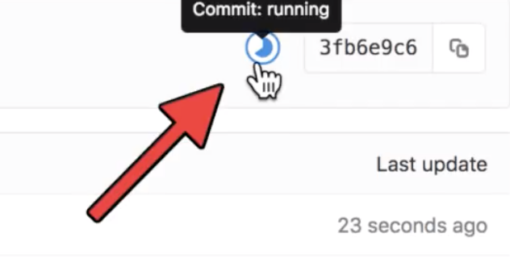
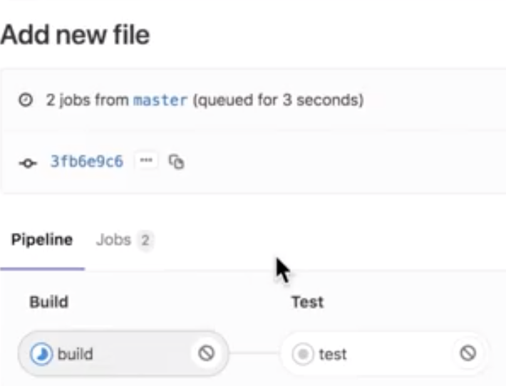
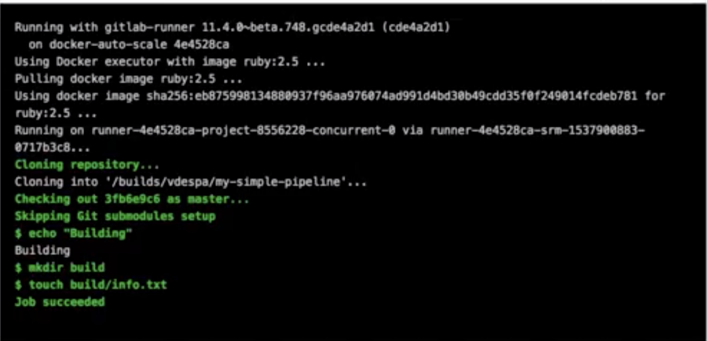
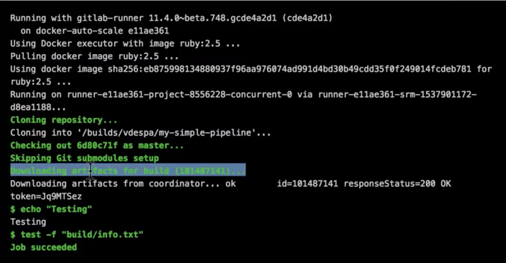

Last Updated: 16-07-2019
How to Setup Git Pipeline
Step 1. Create new project in GitLab.
For this example I will name the project "My Simple Pipeline" and it's under private.
Step 2. Make a new file in the new repository.
Make a new file with the name ".gitlab-ci.yml"
This is the convention and GitLab will automatically recognize it.
Step 3. Define the stages.
Stages:
BuildTest
Step 4. Define the jobs.
You can define the jobs as you want.
Build:
Stage: build
Script:
Echo "Building"Mkdir buildTouch build/info.txt
Artifact:
Paths:
build/
Test:
Stage: test
Script:
Echo "Testing"Test -f "build/into.txt"
Now commit and see if the syntax is valid.

As you can see that the Gitlab CI configuration is valid.
Step 5. Check in the project overview to see if the pipeline has started.
In the top right this symbol should appear, which means the pipeline has started.

Next click on the icon, then you will see how the pipeline will look.
Step 6. Check to test the stages.

First stage is completed.
.
Then test the final stage and see if it can be completed, and in this case it is completed.

This is an example of a simple pipeline, can be built to be more complex but this example is just to teach the basics of using Git Pipeline.